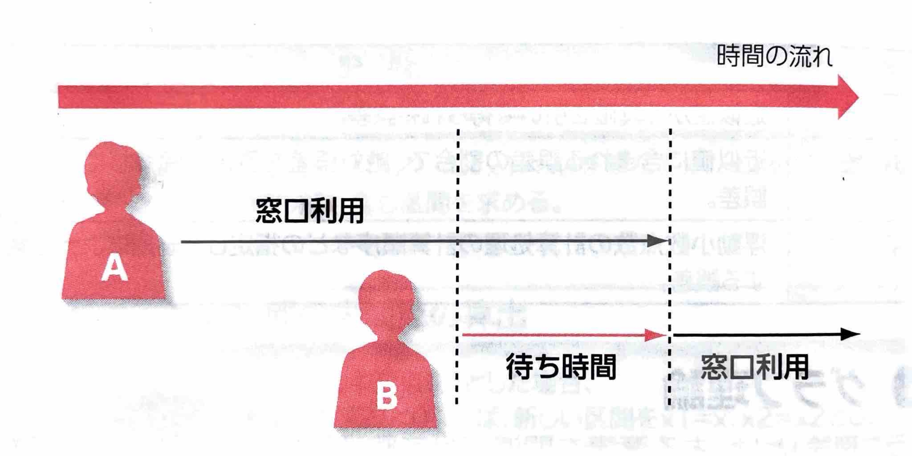
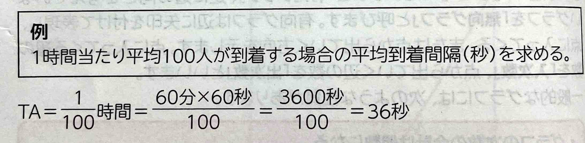
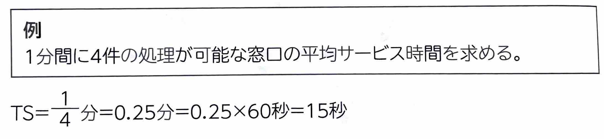
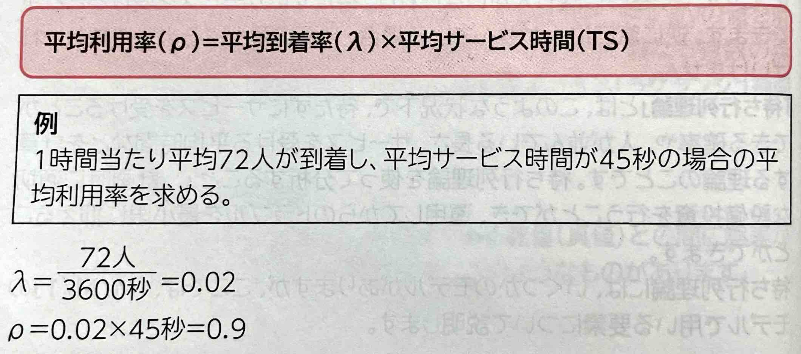
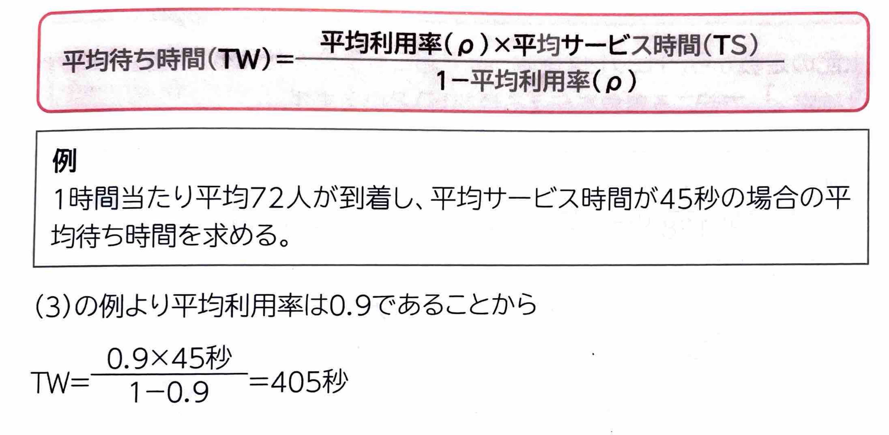
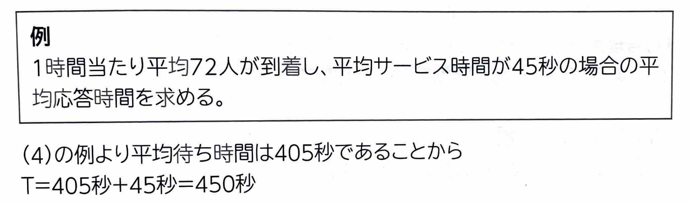

表示
｢待ち行列理論｣
とは、このような状況下、待たずにサービスを受けることができる確率や、人が並んでいる長さ、サービスを受ける平均時間などを計算する理論のことです。待ち行列理論を使って分析することで、計画時に適切な設備投資を行うことができ、運用してからのトラブルを最小限に抑えることができます。
(1)平均到着率｢平均到着率｣
とは、単位時間(秒)当たりに到着する人の割合(人数)のことです。｢\(\lambda\)(ラムダ)｣の記号で表します。｢到着間隔｣
といい、｢平均到着間隔(TA:Time Arrival)｣
は\(\frac{1}{\lambda}\)となります。
(2)平均サービス率｢平均サービス率｣
とは、ひとつの窓口でどれだけサービスを処理できるかの割合のことです。｢\(\mu\)(ミュー)｣の記号で表します。｢サービス時間｣
といい、｢平均サービス時間(TS:Time Service)｣は\(\frac{1}{\mu}\)となります。
(3)平均利用率｢平均利用率｣
とは、窓口がどれだけ利用されているかのことです。｢\(\rho\)(ロー)｣の記号で表します。
(4)平均待ち時間｢平均待ち時間(TW:Time Wait)｣
とは、サービスを受けるまでの待ち時間のことで、次の計算式で求めることができます。
(5)平均応答時間｢平均応答時間(T:Time)｣
とは、平均待ち時間と平均サービス時間を足した時間のことです。